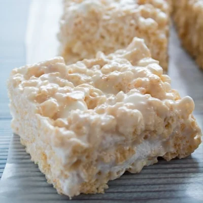

Rice Cripsy Treats

Is this recipe vastly different from the one on the box? No, it is not. Is this recipe vastly superior to the recipe on the box? YES, IT ABSOLUTLEY IS. With a couple of simple tweaks (browning your butter - and adding more, throwing in a real vanilla bean, and SALT) take this childhood classic from boring, to something you'll find yourself craving so much you keep the ingredients on hand.
Ingredients
- 1 cup of butter (yeah, you read that right. If that's going to be a problem and you are thinking of reducing the butter, you are probably in the wrong place and should show yourself out.)
- 1/2 vanilla bean, cut in half the long way and the seeds scraped out (or 1 tsp vanilla extract)
- 2 tsp salt
- 9 cups rice krispies
- 2 bags of marshmallows
Steps
- Line a 9"x13" pan with parchment paper and spray liberally with baking spray. Don't worry about getting the paper perfect. We just don't want our cereal bars sticking to the pan.
- Melt your butter in a large pot over medium heat. Add the salt, the scraped vanilla bean, and the vanilla bean pod (if using vanilla extract, don't add it now. We'll do that at the end.) Continue cooking stirring occasionally until the butter takes on a light brown color and a nutty aroma.
- Turn off the heat and remove the vanilla bean pod using tongs. Add the marshmallows. Let sit for about 30 seconds, then stir with a wooden spoon until marshmallows are mostly melted. (You will be tempted to turn the heat back on now. DO NOT TURN ON THE HEAT. If you turn the heat on, the marshmallows will melt faster, sure. But they will also cook which we don't want. Leaving the heat off now is the difference between chewy cereal bars and hard crusty cereal bars. So leave that heat off!)
- Once the marshmallows are nearly all melted (and your arm is tired) feel free to switch to a wire whisk to break up those last few marshmallow blobs and fully incorporate the butter - or leave chunks if you like chunks! Unlike the heat in the previous step, I've got no dog in this fight.
- (If you are using vanilla extract, add it here.)
- Using the wooden spoon, stir in the rice krispies.
- Dump out into prepared pan and spread, pressing into the corners gently with a spatula sprayed with baking spray.
- Let it stand until it has set up, about 1 hour or until you can't take it anymore.